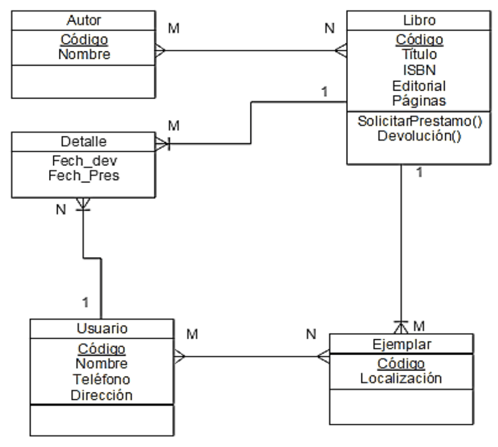
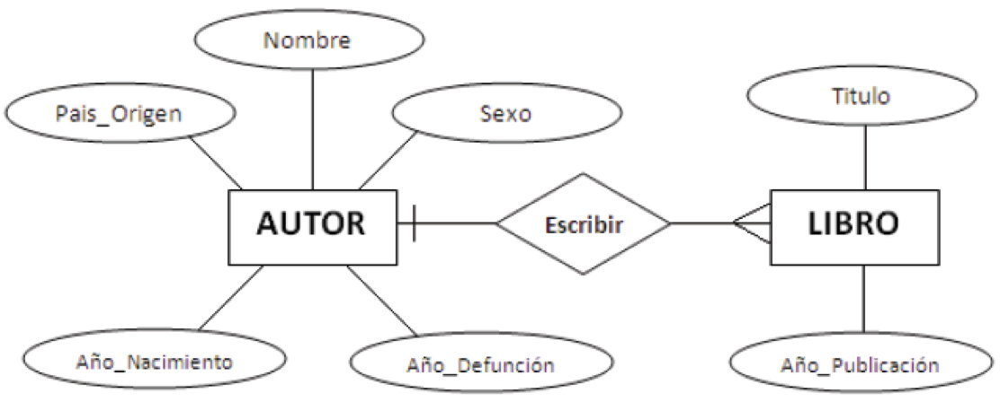

Resumen de los temas de la asignatura Base de Datos.
El DER es una herramienta gráfica que permite representar la información de un sistema y cómo se relaciona entre sí.
Hay 2 tipos de DER, Fisico y Logico:
Para tenerlo simple y memorable, el Fisico se enfoca en el "cómo" mientras el Logico se enfoca en el "qué".


Formas Normales (Normalización):
* 1FN Eliminar valores repetidos y definir clave primaria.
* 2FN Que todos los atributos dependan totalmente de la clave primaria.
* 3FN Eliminar dependencias transitivas.